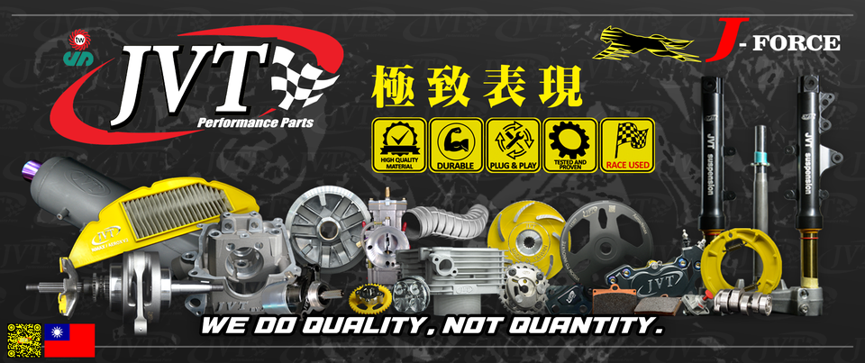
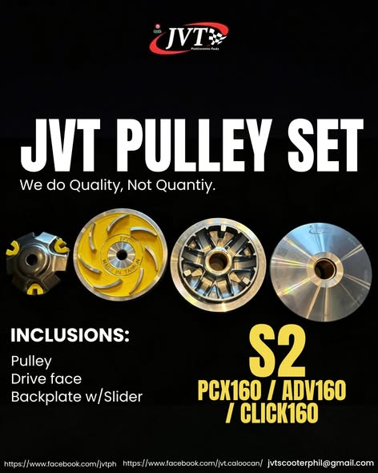

Power delivery
CVT and transmission
Build the response around parts designed to work together, then match the setup to the rider and the machine.
- Pulley sets and drive faces
- Torque drivers
- Clutch bells and linings
- Center and clutch springs

Race-developed. Rider-focused.
Taiwan-rooted scooter performance parts, supported by the JVT Philippines team in Caloocan.
Start with your scooter
Choose your model to see the current JVT Pulley Set S2 application shown by JVT Philippines. Confirm the year and exact configuration with the team before ordering.
Select fitment
Honda scooter platforms
JVT Pulley Set S2
Model-year and setup differences matter. Send your exact unit details to JVT before purchasing.

Performance systems
From CVT response to engine breathing, JVT develops parts across the scooter performance stack.
Power delivery
Build the response around parts designed to work together, then match the setup to the rider and the machine.
Core performance
Camshafts, cylinder blocks, crankshafts, valve components, and supporting parts developed for performance applications.
Ask about engine partsBeyond the engine
Power pipes, suspension, and brake components complete the performance conversation.
Fitment and availability vary. Confirm your exact model and intended use with JVT.
From Taipei to Caloocan
JVT began in Taipei in 1993 and established its Philippine presence in 2003. The brand grew through scooter development, race participation, and products designed for riders who care about quality and fitment.
Read the published JVT profileA foundation in scooters and performance development takes shape in Taiwan.
The Philippine operation introduces four-stroke scooter platforms and builds a local performance community.
Current parts support popular Honda and Yamaha scooter platforms, with the Caloocan team helping riders confirm fitment.
Before you ask for a part
A clear setup brief helps JVT check fitment and point you toward the right conversation.
Rider questions
Start with the fitment finder above for the current Pulley Set S2 applications shown by JVT Philippines. Send your exact model, year, and current setup to the team before purchasing.
Browse the official JVT Philippines Main store on Shopee, or ask the verified Facebook page for current dealer and product availability.
Yes. A qualified motorcycle mechanic should install and tune performance parts, especially engine, CVT, exhaust, brake, and suspension components.
JVT has a strong racing background, while its product range also serves street applications. Tell the team how you use your scooter so they can discuss a suitable setup.
Local rules and inspection requirements can apply to exhaust and engine modifications. Confirm the current requirements for your area and keep safety, installation quality, and responsible riding first.
Talk to the Philippine team
For the fastest fitment conversation, include your scooter model, model year, current parts, and intended use.
Call the team
0917 836 8680 0949 887 2900 0922 844 0336 02 8459 0492Visit JVT
133 D. Aquino corner 8th Avenue, West Grace Park, Caloocan, Metro Manila Get directionsListed hours
Monday to Saturday
8:00 AM to 6:00 PM